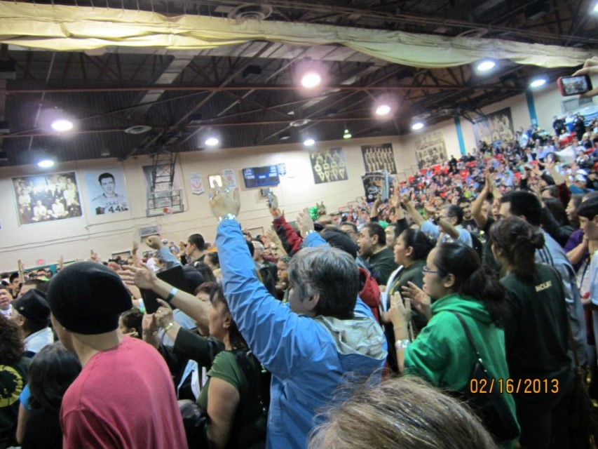
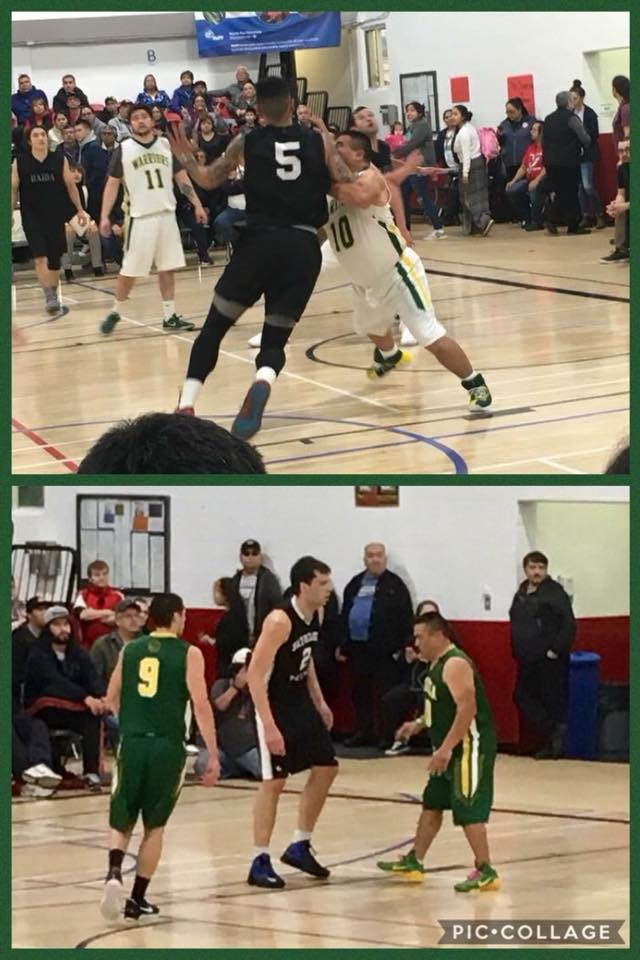
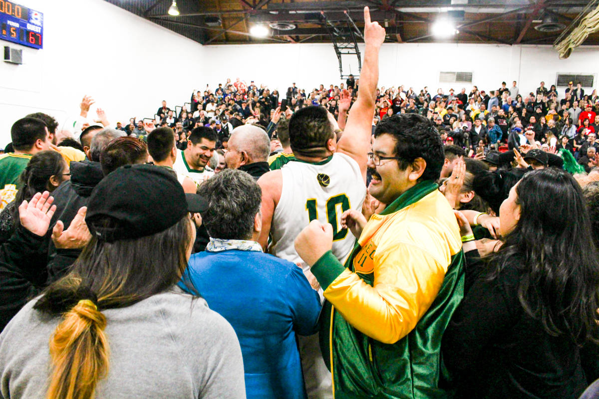

"Kitkatla Warriors"
"Kitkatla Warriors are Gitxaala Nation's Pride & Joy"


"Warriors: Champion Legends"
1951-1960-1962-1964-1971

Gitxaala Nation Home of my Heart
"The Warrior 2018"

The All Native tournament hosts FN all across BC. The pride of representing your community. The city of Prince Rupert benefits from over a million in revenue from this event alone. One week of thousands of people coming to watch their teams and favorite teams play. The purchase of the customized seats shows the love of the Event.
This photo was taken when our team lost by 1 point in 2016. You cannot tell because even in loss Fans flooded the floor to support our team in a tough battle. Showing we love them and to stand tall, and get ready for a come back the next year.
This photo is of my nephew Joe Lewis. During the games you will hear chants of "Smokin Joe" or the radio broadcasters caling him the "Lil Big Man" He is the oldest on the seniors team at the age of 32. While many \his age moved to the masters his determination to get a championship in the seniors paid off and he now holds 2 championships. He trains most of the year in preparation, including this year.
This picture capture the fans flooding the Russell Gamble memorial Gym in Prince Rupert as the Kitkatla Warriors won their first Championship after 47 year battle to be champs again. The game went into overtime and came down to the last seconds of the final buzzer; the seniors played their hearts out to win the Game.
"It Takes A Village To Raise A Banner - The Kitkatla Warriors Story"
video by Jamaine Campbell https://www.youtube.com/watch?v=j0aSIKzPOt4&feature=youtu.be
Champions don't just happen, it is hard work, earned respect and support from the Nation, Family, Friends and community Members.
Every Kitkatla Warrior from Gitxaala comes from strong teaching from newborns to adulthood. Matriarchs have been grooming them for a life of hardwork, respectful mannerism, and pride of not only where they come from but where they are going.
"The Warrior 2019"

Destiny Bolton Gitxaala Youth was so inspired she drew this picture
Pic drawn by Destiny Bolton https://www.facebook.com/photo.php?fbid=2106800352742932&set=pb.100002389620840.-2207520000.1572559565.&type=3&theater